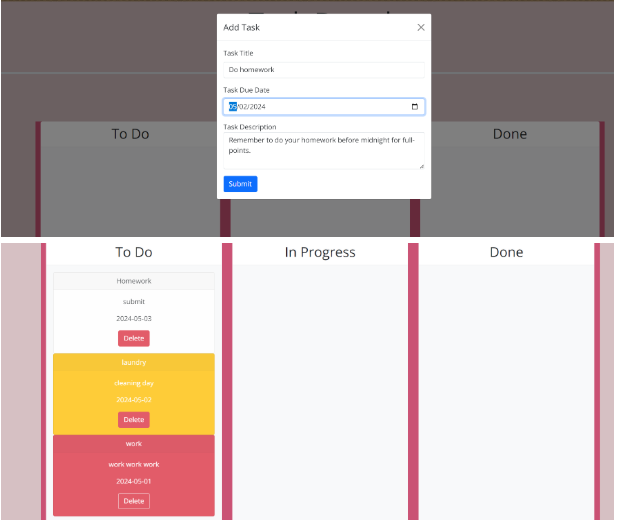
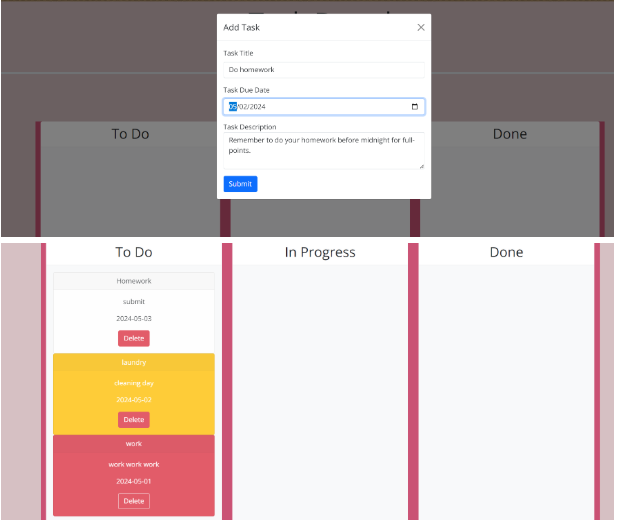

Experience/Skills
- Effectively communicate with providers and the clinical team via the EPIC system, delivering guidance and step-by-step instructions on procedures and patient services.
- Daily Record keeping and data entry such as register, maintain, and update patients’ information.
- Billing and payment processing such as verifying patients’ insurance coverages and benefits, co-pays, deductibles, and balances prior to visits.
- Authored clear instructions and designed monthly newsletters highlighting program services, updates, events, and workshops.
- Created Talent Search Program’s budget reports by utilizing Ellucian Colleague database.
- Coordinated events and activities such as college tours and workshops by communicating through invitations, reminders, emails, letters, and text messages to parents and students.
- Monitored students' participation and academic progress; provided regular reports to the Director.
Programming Languages: JavaScript, React, Express, Node.js, PostgreSQL, ORM, MERN Stack, MongoDB, CSS, HTML, Autodesk Maya, Adobe Illustrator, InDesign, Photoshop, EPIC, Microsoft Office Suite, GitHub, Insomnia, Netlify, Windows, Mac
Northwestern Medicine: Patient Service Representative
Elgin Community College: TRIO Talent Search
Education
Bachelor of Liberal Arts in English: Northern Illinois University - December 2022
Certificate of Completion in Software Coding: Northwestern University - September 2024
Associate of Applied Science in Graphic Design: Waubonsee Community College - December 2013
Sigma Tau Delta International English Honor Society
National Technical Honor Society
Software Coding Projects/Repositories
Languages: JavaScript, React, Express, Node.js, PostgreSQL, ORM, MERN Stack, MongoDB, CSS, HTML
- Tech-Blog: Developed an interactive application that accepts and responds to user input, integrating several server-side APIs to enhance functionality, and utilizing client-side storage for persistent data management.
- Tech-Blog GitHub Repository Here
- Polling-App: Developed a polling app utilizing MERN stack to provide questions, answers, options, track number of clicks on choices, and provide the results for each question.
- Polling-App GitHub Repository Here
- Weather-App: Designed a blogging page that utilizes JavaScript, API, and Local Storage to gather user’s inputs to make a submission to the posts page.
- Weather-App Live Link
- Back-End: Developed apps utilizing RESTful API, Express.js, and Sequelize ORM to interact with a PostgreSQL database, implementing schemas and seed data for structured data. Tested the API endpoints using Insomnia/Postman, optimizing database interactions with Sequelize models and query performance enabling API GET, POST, PUT, and DELETE routes.
- Routes-Modification Here YouTube Link Routes-Modification
- Retail_website Here YouTube Link Retail_website
- Employee-Tracker: Developed a command-line application to manage employee data utilizing PostgreSQL and Node.js to display all departments, all roles, and all employees.
- Employee-Tracker Here
- YouTube Link Employee-Tracker
- Note-Taker: Created a note-taking application using Express.js backend to save and retrieve data while displaying it on the new note column and providing the options to save note, delete note, and clear form.
- Note Taker project Here
- SVG-Logo-Generator: Developed a Node.js command-line application that generates an SVG logo based on user inputs, allowing customization of the font, color, and shape.
- SVG Generator Here
- YouTube Link SVG-Logo-Generator
- Task-Board: Developed a task board application with three columns categorized by progress states, featuring color-coded columns and drag-and-drop functionality to enhance user experience.
- Task-Board Live Link
- Professional README Generator: Developed a Professional README Generator using Node.js and the command line. This tool utilizes Inquirer.js to collect user input interactively and dynamically generates a structured README file using a custom Markdown generator.
- README Generator Here
- YouTube Link README Generator

 

Graphic Design Projects
Software: Adobe Illustrator, Adobe Photoshop, Adobe InDesign, Autodesk Maya 3D